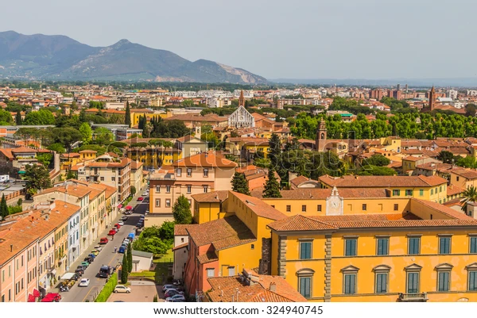
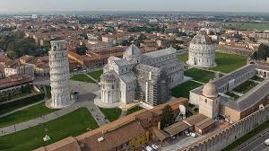
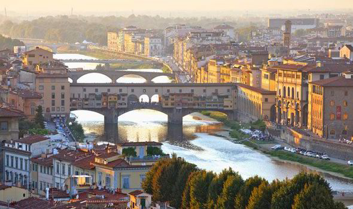

Pisa was born as an Etruscan port, around the middle of the VI century. First human settlements date back to the IX century. There are many hypothesis about Pisa's origins: it is said it was a Greek country, a village of Liguria or an Etruscan city. Etruscans called the city Pise and developed the economy of the country through arts and crafts production. The city had a strategic position, because it is close to river Arno and the sea. After the first battles against Ligures, Pisa became the ally of Rome, and took place in the wars against Carthage. At the end, it became a Roman colony. Around the 15th century, Pisa was subjected by Lombards. From that moment the city became the main port of the Tyrrhenian Sea and Lombards traded with Sardinia, Corsica, Spain and France.
  